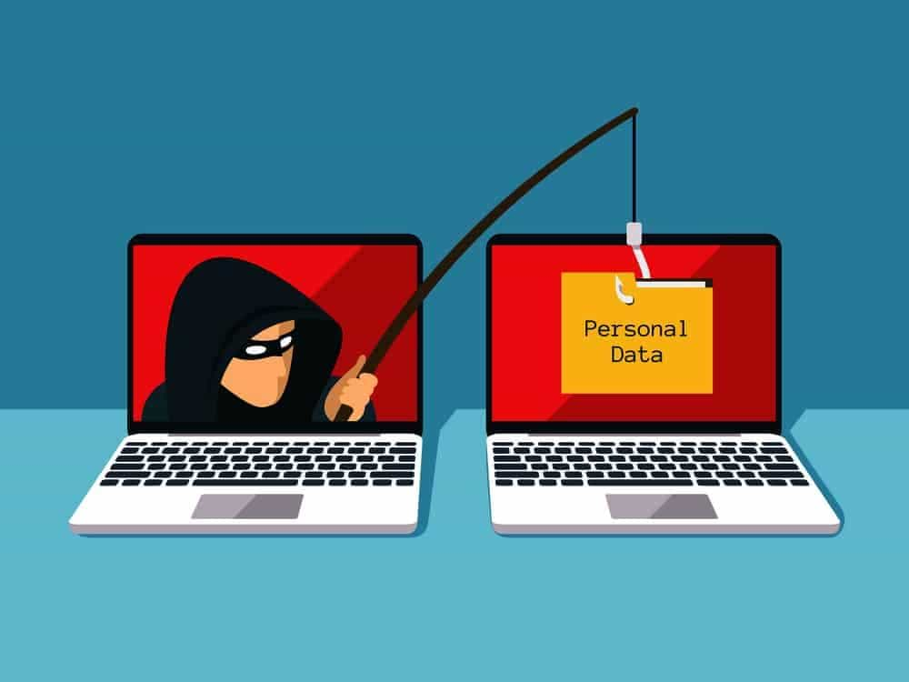

A secure connection is a connection that is encrypted by one or more protocols to ensure the security of data flowing between two or more nodes. when a connection is not encrypted , it can be easily hacked or listened by anyone with knowledge on how to do it .
Eavesdropping is the unauthorized real-time interception of a private communication , such as a phone call , instant messages , videoconference or fa transmission . the term eavesdrop is derived from the practice of actually standingunder the eaves of a house , listening to conversation inside.Eavesdropping attacks are of difficult to detect because they do not cause network transmissions to appear to be operating .
While there are many online scams on e internet , phishing is one that is geared specifically towards retrieving someone's personal information and using it to harm them. An identity theif , known as a phisher , will lure victims using emails and websites that seem harmless or secure.
FAKE EMAILS : these are another way of Phishing.